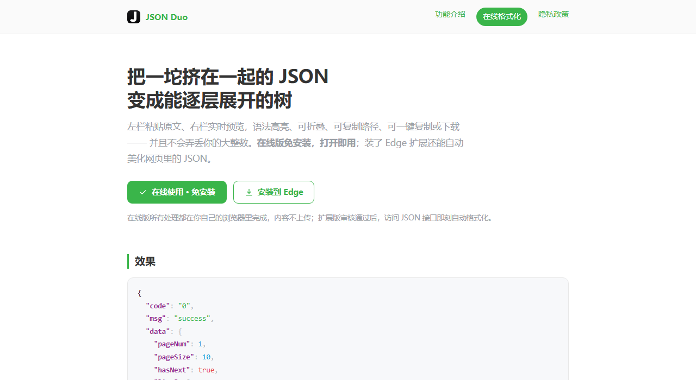
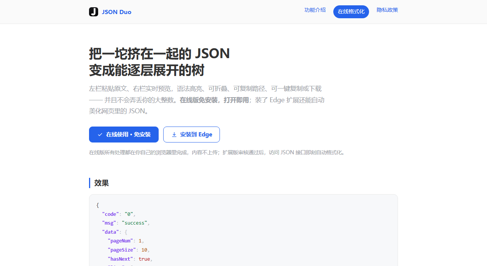
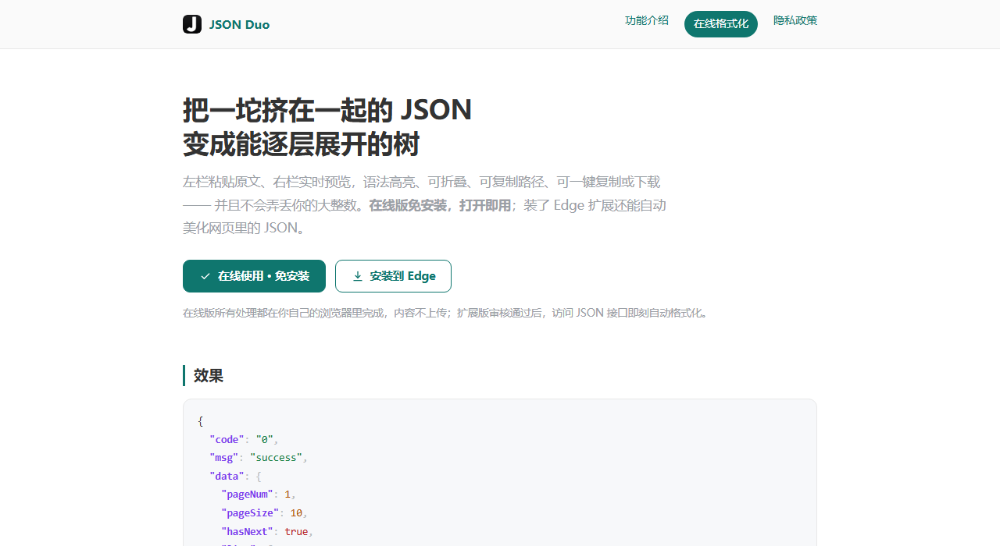
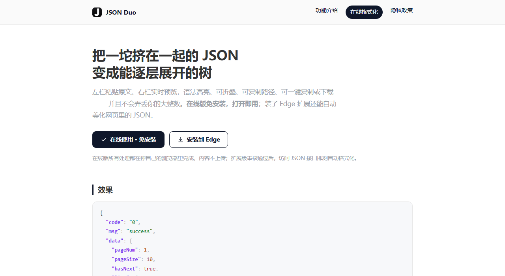

0 · 现状（对照）
绿 #3ab54a。与字符串语法色**完全同值**，且与数字浅蓝、键名品红三色并存；白底对比度 2.66:1，未达 AA。



三列分别是：落地页首屏（浅色）、工作台（浅色）、工作台（深色）。全部是 site/index.html 与 site/app.html 的真实渲染，运行时注入候选变量后原样截屏，缩放到 20%。判断标准两条：① 主色和四色语法高亮能不能一眼分开；② 工作台里还会不会同时出现两套强调色（品牌绿 + 焦点蓝）。
绿 #3ab54a。与字符串语法色**完全同值**，且与数字浅蓝、键名品红三色并存；白底对比度 2.66:1，未达 AA。

主色 #2563EB，与图标「黑白编辑器」气质同源，与四色语法高亮**全部错开**。白底 5.17:1 达标；开发者工具的心智色（DevTools / VS Code）。



主色 #0F766E。品牌从绿到青的**连续过渡**，改动最小、观感最稳；但青与字符串绿同属绿系（色相差约 33°），分离度弱于 A。白底 5.47:1 达标。



主 CTA 用近黑 #0F172A，**与图标底板同色**，品牌识别最直接；焦点/链接另用蓝 #2563EB。最克制、最像编辑器，但按钮的「可点击感」弱于 A。
